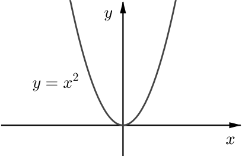

Here are some statements about the function f(x) in the graph above. In each case, decide if the statement is true. If it is not true, try to adapt it to make a true statement.
If −5<a<b<−3 then f(a)<f(b).
From the graph above, we can see that for any a and b between −5 and −3, if a<b then we always have f(a)<f(b). In other words, as x increases, the value of f(x) increases. Therefore statement 1 is true.
If 2.5<a<b<5 then f(a)<f(b).
The lowest point of the graph between x=2.5 and x=5 occurs when x=3.2. We say the graph has a ‘local minimum’ when x=3.2. This means that for x near 3.2 but less than 3.2, as x gets larger the value of f(x) decreases, but once x is larger than 3.2 the value of f(x) starts to increase again. There are some values of a and b between 2.5 and 5 for which a<b and f(a)<f(b) and others for which a<b but f(a)>f(b), so statement 2 is not true. One way to modify statement 2 to give a true statement is to restrict the set of values for a and b to, say, 3.2<a<b<5.
If −2.5<a<b<2 then f(a)>f(b).
If −2.5<a<b<3 then f(a)>f(b).
The graph shows that as x increases from −2.8 to 2, the value of f(x) decreases. Therefore statement 3 is true. Also, as x increases from 2 to 3 the value of f(x) decreases, but does this mean that statement 4 is true?
This tells us that we need to look at behaviour around critical points, such as the asymptote at x=2 where the function isn’t defined, as well as looking at whether the function is increasing or decreasing.
Now consider the following statements about real numbers a and b and some familiar functions. Try to sketch or visualise the graph of the functions as you think about the statements.
If a is less than b, then a2 is less than b2.
If a is less than b, then a−5 is less than b−5.
If a is less than b, then 3−2a is less than 3−2b.
If a is less than b, then 1a is greater than 1b.
If you think a statement is true or false for all a and b, can you justify this using a graph?
If a statement may be true for some values of a and b and false for other values, can you form a true statement or statements by restricting the set of values for a and b?
If a is less than b, then a2 is less than b2.
As the function f(x)=x2 only increases for x>0, statement 5 is true if a and b are both positive. Otherwise the statement could be false and we’d need to know more about a and b. For example, if a=−5 and b=−2 then f(a)>f(b) whereas if a=−5 and b=6 then f(a)<f(b).

If a is less than b, then a−5 is less than b−5.
If a is less than b, then 3−2a is less than 3−2b.
What do the graphs of y=x−5 and y=3−2x tell you about increasing and decreasing behaviour? Can you describe what happens for any function of the form f(x)=mx+c?
If a is less than b, then 1a is greater than 1b.
The function f(x)=1x is decreasing for x<0 and for x>0, so if a and b are both negative or both positive and a<b, we have 1a>1b. However, if a=−2 and b=3 then 1a<1b. We need to know more about a and b if want to know how 1a and 1b are related.